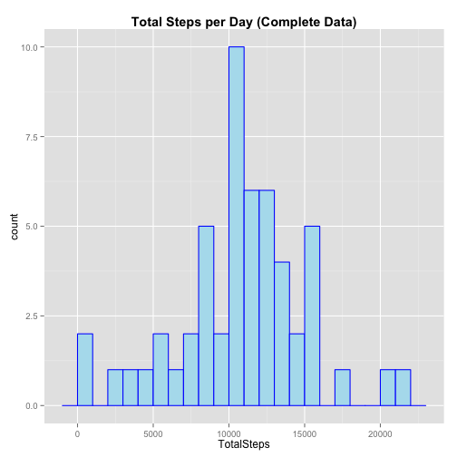
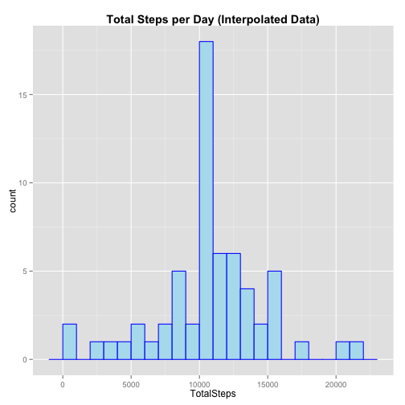

(The source datafile was originally obtained from https://d396qusza40orc.cloudfront.net/repdata%2Fdata%2Factivity.zip and is replicated here.)
This code loads the datafile and displays some of the data:
activityData = read.csv(dataFile)
head(activityData)
## steps date interval
## 1 NA 2012-10-01 0
## 2 NA 2012-10-01 5
## 3 NA 2012-10-01 10
## 4 NA 2012-10-01 15
## 5 NA 2012-10-01 20
## 6 NA 2012-10-01 25
Some statistics on how much of the 'steps' data is 'NA':
incompleteRowCount = nrow(activityData[!complete.cases(activityData), ])
message("Number of rows: ", nrow(activityData),
"\nNumber of rows with missing date or interval values: ",
length(which(is.na(activityData$interval) | is.na(activityData$date))),
"\nNumber of rows with missing steps values: ",
length(which(is.na(activityData$steps))))
## Number of rows: 17568
## Number of rows with missing date or interval values: 0
## Number of rows with missing steps values: 2304
This code determines if the NA values in the steps columns are concentrated in a few days or are spread out across all days:
naStepsDistribution = aggregate(steps ~ date, data=activityData, function(x) {sum(is.na(x))}, na.action = NULL)
message("Number of days with partially-complete 'steps' values: ",
nrow(naStepsDistribution[naStepsDistribution$steps > 0 & naStepsDistribution$steps < 288,]),
"\nNumber of days with completely missing 'steps' values: ",
nrow(naStepsDistribution[naStepsDistribution$steps == 288,]))
## Number of days with partially-complete 'steps' values: 0
## Number of days with completely missing 'steps' values: 8
All the NA values are accounted for by 8 days for which we have no data - all other days are complete.
The following section of code processes the data to a more useful form.
Converting the "date" and "interval" fields to a real date value. This let's us calculate weekday/weekend values:
activityData$dateTime = paste(activityData[,2],
floor(activityData$interval / 100),
activityData$interval %% 100,
sep="-")
activityData$dateTime = strptime(activityData$dateTime, "%Y-%m-%d-%H-%M")
This code marks the rows by weekday/weekend:
activityData$dayType = ifelse(weekdays(activityData$dateTime) %in% c("Saturday", "Sunday"), "weekend","weekday")
activityData$dayType = factor(activityData$dayType)
activityData$dateTime = NULL
This code extracts the complete rows, aggregate by date to get the daily totals. It also adds the date to the resulting table for plot generation.
activityDataComplete = activityData[complete.cases(activityData[,1]),]
dailyStepCompleteTotals = aggregate(x = activityDataComplete$steps, by = list(activityDataComplete$date), FUN = sum)
colnames(dailyStepCompleteTotals) = c("Date", "TotalSteps")
dailyStepCompleteTotals$Date = strptime(dailyStepCompleteTotals$Date, "%Y-%m-%d")
This code plots a histogram of total steps-per-day:
library(ggplot2)
ggplot(data=dailyStepCompleteTotals, aes(x=TotalSteps)) +
ggtitle("Total Steps per Day (Complete Data)") +
geom_histogram(fill="lightblue2", colour="blue", binwidth = 1000) +
theme(plot.title = element_text(face="bold"))

This code reports the mean and median values for the steps-per-day totals:
message("Mean steps-per-day value (complete rows): ",
mean(dailyStepCompleteTotals$TotalSteps),
"\nMedian steps-per-day value (complete rows): ",
median(dailyStepCompleteTotals$TotalSteps))
## Mean steps-per-day value (complete rows): 10766.1886792453
## Median steps-per-day value (complete rows): 10765
Here we do a bit of extra work to calculate step averages aggregated by 5-minute interval. We attach a "weekday/weekend" factor column to the data because we'll need it a bit later.
activityDataCompleteWeekday = activityDataComplete[activityDataComplete$dayType == "weekday",]
weekdayStepAverages = aggregate(x = activityDataCompleteWeekday$steps, by = list(activityDataCompleteWeekday$interval), FUN = mean)
weekdayStepAverages$dayType = "weekday"
activityDataCompleteWeekend = activityDataComplete[activityDataComplete$dayType == "weekend",]
weekendStepAverages = aggregate(x = activityDataCompleteWeekend$steps, by = list(activityDataCompleteWeekend$interval), FUN = mean)
weekendStepAverages$dayType = "weekend"
stepAverages = rbind(weekdayStepAverages, weekendStepAverages)
stepAverages$dayType = factor(stepAverages$dayType)
colnames(stepAverages) = c("interval", "steps", "dayType")
Here's what the resulting data looks like:
head(stepAverages)
## interval steps dayType
## 1 0 2.3333 weekday
## 2 5 0.4615 weekday
## 3 10 0.1795 weekday
## 4 15 0.2051 weekday
## 5 20 0.1026 weekday
## 6 25 1.5128 weekday
This code makes a time series plot of the 5-minute interval (x-axis) and the average number of steps taken, averaged across all days (y-axis):
library(lattice)
xyplot(steps ~ interval,
data=stepAverages,
main="Average Daily Activity Pattern (Complete Data)",
type="a",
xlab="Interval",
ylab="Number of Steps")
(As we can see, not much walking before 5:00 AM!)
This code reports the 5-minute interval with the highest average step values:
message("5-minute interval with the highest step average: ", stepAverages[which.max(stepAverages$steps),"interval"])
## 5-minute interval with the highest step average: 835
As we saw above, there are 2304 rows with missing values:
message("Number of rows with missing data: ", incompleteRowCount)
## Number of rows with missing data: 2304
There's no perfect way to deal with this.
I chose to use the mean values for each 5-minute interval (not including the NA values).
Extracting this data:
intervalMeans = aggregate(x = activityDataComplete$steps, by = list(activityDataComplete$interval), FUN = mean)
colnames(intervalMeans) = c("interval", "meanVal")
intervalMeans[1:10,]
## interval meanVal
## 1 0 1.71698
## 2 5 0.33962
## 3 10 0.13208
## 4 15 0.15094
## 5 20 0.07547
## 6 25 2.09434
## 7 30 0.52830
## 8 35 0.86792
## 9 40 0.00000
## 10 45 1.47170
Create a new dataset that is equal to the original dataset but with the missing data filled in:
patchedActivityData = activityData
patchedActivityData$steps = ifelse(is.na(patchedActivityData$steps),
intervalMeans$meanVal[match(intervalMeans$interval, patchedActivityData$interval)],
patchedActivityData$steps)
And we aggregate the step totals:
dailyStepTotals = aggregate(x = patchedActivityData$steps, by = list(patchedActivityData$date), FUN = sum)
colnames(dailyStepTotals) = c("Date", "TotalSteps")
This code plots a histogram of total steps-per-day with the interpolated data:
ggplot(data=dailyStepTotals, aes(x=TotalSteps)) +
ggtitle("Total Steps per Day (Interpolated Data)") +
geom_histogram(fill="lightblue2", colour="blue", binwidth = 1000) +
theme(plot.title = element_text(face="bold"))

Because of the interpolation strategy, noticeably more of the data is concentrated at the mean value.
This code reports the mean and median values for the steps-per-day totals (interpolated data):
message("Mean steps-per-day value (with interpolated data): ",
mean(dailyStepTotals$TotalSteps),
"\nMedian steps-per-day value (with interpolated data): ",
median(dailyStepTotals$TotalSteps))
## Mean steps-per-day value (with interpolated data): 10766.1886792453
## Median steps-per-day value (with interpolated data): 10766.1886792453
These values are almost identical to the first mean and median. In this case, the median has become identical to the mean.
This code creates a panel plot containing a time series plot of the 5-minute interval (x-axis) and the average number of steps taken, averaged across all weekday days or weekend days (y-axis).:
xyplot(steps~interval|dayType,
data=stepAverages,
main="Average Daily Activity Pattern, Weekdays vs Weekend (Interpolated Data)",
type="a",
xlab="Interval",
ylab="Number of Steps",
layout=c(1,2))
A cursory inspection reveals some differences: